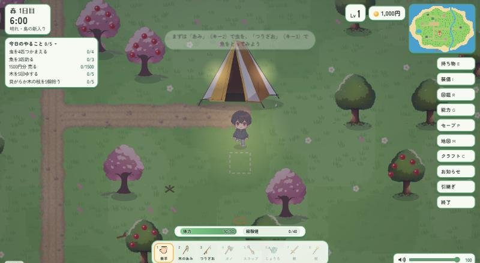
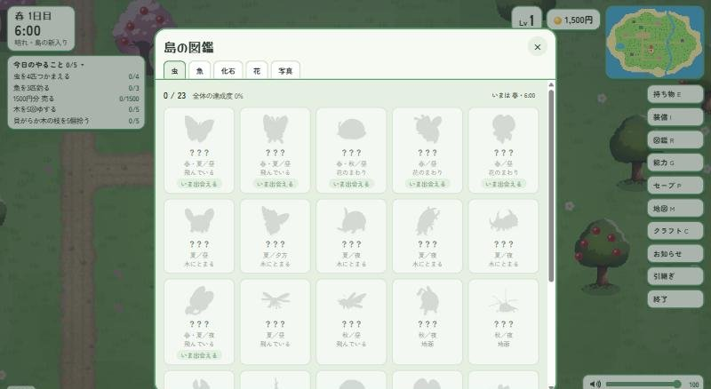
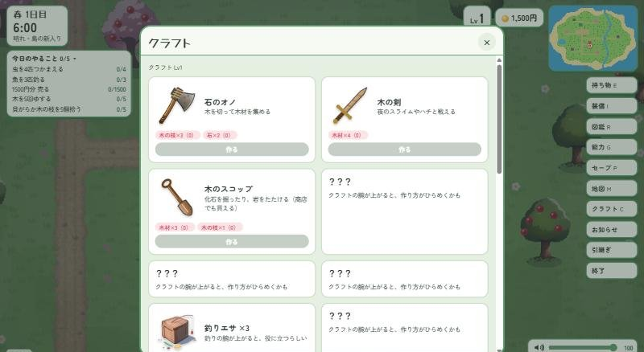
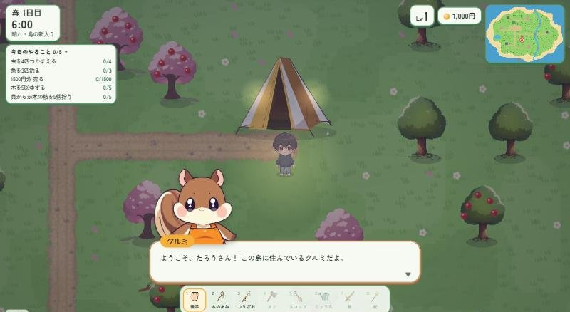
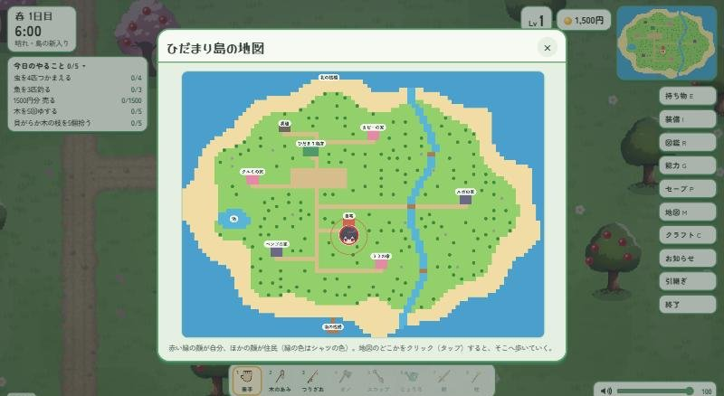
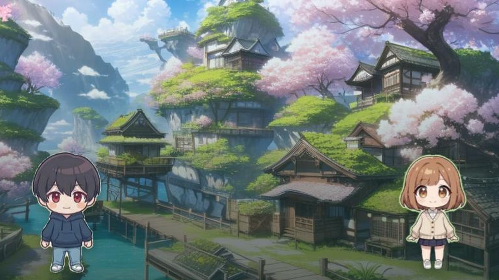

HIDAMARI ISLAND LIFE
ひだまり島ぐらし
くらすほど、じぶんも島も育っていく。
のんびり時間の、やさしい島ぐらし。
今すぐ遊ぶ（無料・登録不要）
ブラウザですぐ始められます ／ スマホ・パソコン対応
WHAT YOU CAN DO
島でできること
のんびり過ごすほど、できることが増えていく。あなたの島ぐらしを、のぞいてみましょう。

🌿のんびり暮らす
自分のペースで、島ぐらし
朝がきて、夜がくる。木をゆすって、道を歩いて。急がなくていい、あなたのリズムで島での毎日を過ごしましょう。やることリストは、気が向いたときに。

🦋採集・虫とり・釣り
虫・魚・化石・花をあつめる
あみと釣りざおを手に、島のいきものをコレクション。季節ごとに出会えるものが変わります。島の図鑑を、少しずつ埋めていく楽しさを。

🔨クラフト・道具づくり
素材を集めて、道具づくり
木や石を集めて、オノやスコップ、家具をクラフト。できることがどんどん広がります。腕が上がると、新しいレシピもひらめくかも。

🐿️住民との出会い
島の仲間と、ふれあう
個性ゆたかな住民たちが、あなたの島で暮らしています。話しかけたり、手紙が届いたり。ちょっと心があたたまる、そんな交流を。

🗺️探索・島づくり
広い島を、自分の色に
海も川も、丘も浜辺も。島をめぐって、花を植えて、家具をかざって。住むほどに、あなただけのひだまり島になっていきます。
GALLERY
ゲーム画面

HOW TO PLAY
はじめかた
STEP 1
🌅
島にわたる
名前を決めて、ボタンひとつで島ぐらしがスタート。登録もインストールも不要です。
STEP 2
🧺
のんびり暮らす
採集・釣り・栽培・クラフト。好きなことから、マイペースにどうぞ。
STEP 3
🌳
島を育てる
暮らすほどに、できることが増え、島も自分も育っていきます。
対応：Web / スマホ・パソコン
価格：無料で遊べる
登録：不要・すぐ遊べる